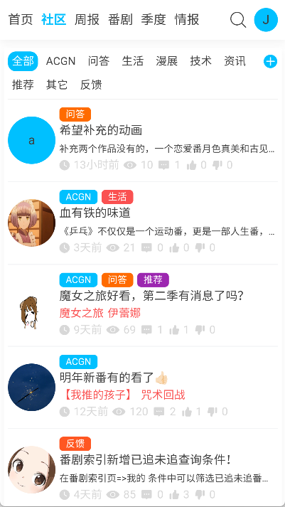

每周追番两小时压缩到二十分钟：我用 AniFun 搭了一条季度追番流水线
从季度榜筛选到跨设备同步、从标签推送消噪到问答解惑，把 AniFun 嵌进一套固定动作里，追番这件事从每周两小时砍到二十分钟。
每周一早高峰地铁上，我固定有一件事要做——花二十分钟处理这一季度的追番清单。这件事以前要耗两小时起步：翻 B 站新番列表、Anilist 查评分、Excel 记进度、换手机再手动同步一遍。自从把 AniFun官网 提供的这套工具嵌进这条链，整套动作被压成了一套固定流程，不用再东翻西找。
旧流程的三个卡点
先说说以前怎么干的。每季度新番开播那一周，我会同时打开 B 站新番导视页、Anilist 当前季榜单、Bangumi 评分页三个标签页，一部一部过。问题出在三个地方：
第一，信息源之间对不上号。 B 站新番列表更不全，很多独播番没列进去；Anilist 评分倒是快，但那时候评分只有几十条，参考价值有限；Bangumi 数据滞后两周才跟上。三页来回切，还得手动记录哪些看了哪些没看。
第二，追番进度要手动维护。 看番大多在手机上，但偶尔会在电脑上看两集。以前用 Excel 记「追了几集、是否完结、下周要不要继续」，换手机就得把文件拷过去更新，或者干脆凭印象记得不准。
第三，找同类番没有固定出口。 看完一部喜欢的想找类似的，要么在 B 站评论区翻，要么去 Bangumi 论坛搜，问个问题还要等好几天才有答主理。
这三个点凑在一起，一季度下来光筛选和同步就要耗掉好几个晚上。
新流程：AniFun 嵌在哪一环
我现在的季度追番流水线是这样的，一共四步，全在 AniFun 里完成：
第一步，季度开播两周后，进 AniFun 的季度榜。 这是我摸出来的时间窗口——开播一周的时候评分还没积累起来，季度榜里的数据噪声大；开播两周后，一部番的口碑基本定型，前十五名基本就是本季的质量梯队。我打开季度榜，拉到前二十，把已经决定追的点一下加入追番列表，剩下的看一眼题材和海报，不确定的就先放着过两天再看。
第二步，用个性化标签做信息过滤。 我在 AniFun 的标签订阅里把「治愈日常」「异世界奇幻」「科幻悬疑」设成强烈偏好，把「后宫」「机战」设成排除——具体怎么设置优先级、哪些标签可以排除，我是对着AniFun文档里的标签说明一步步调的。这样首页资讯流推过来的就都是我真正感兴趣的内容，季度导视面板里偏好类型的番还会被单独标出来，不用在一堆新番里一个个辨认。这一步的好处是减少了无意义的信息流翻阅——以前刷 B 站新番推荐页，十部里可能只有两部和我口味接近，现在打开 AniFun 首页，排前面的基本都是可以直接决策的。
第三步，追番进度自动同步到云端。 这步最省心。手机 App 里标记追了几集、看完了就完结标记，网页端刷新一下立即显示同样的状态。我试过晚上在手机上标记《葬送的芙莉莲》追完了最后一集，第二天早上打开电脑浏览器版 AniFun，追番列表里它自动移到了已完结分组。中间没有任何手动操作。但这里有个坑必须说清楚：未登录状态下的追番操作只保存在本地设备。我之前换手机没登录就先追了十几部，结果登了账号发现都没了。所以现在的动作是：先从官方下载装好 AniFun，登录后再开始追番。
第四步，拿不准的问题直接去问答板块。 比如想找类似《药屋少女的呢喃》的古风番、或者《Fate》系列观看顺序、或者某部番的 B 站版权情况——这些以前要搜半天或者问朋友的问题，现在我在 AniFun 问答板块提，通常几小时内就有人答。而且回答质量意外的高，提问技巧里有一条是「越具体答案越准」，我试了一次提「2024 年治愈系日常番，最好有女主角」，不到一小时就收到了三条推荐，每条都附了评分和观看建议。

两个容易断链的环节，我是怎么处理的
第一个环节：季度榜什么时候开始看。 刚开播一周的新番，评分只有几十条，季度榜里的名次波动很大。比如去年春番有部开局评分 9.2 的番，开播第五周掉到了 6.8。所以我给自己定了一个规矩：开播不到两周的番，不管海报多诱人，先标记「观察中」，等满两周再去季度榜核对一次。
第二个环节：跨设备切换时的数据刷新。 AniFun 用的是最后写入胜出的同步策略，对追番场景来说是合理的——两个设备同时操作不会丢数据，但偶尔会有云端同步延迟。比如我在手机上刚标记完结了一部，电脑端打开还没更新。解决方法很简单：下拉刷新一下追番列表，立即拿到最新状态。我现在的习惯是每次打开新设备用 AniFun 的时候，先手动下拉刷一下再操作。
效果和边界
这套流程跑下来，对比一下：以前一季度追番筛选加同步要花六到八小时，现在压到两个小时以内——季度榜选番二十分钟、标签设置半小时（每季开始调一次就行）、日常同步完全不用管、偶尔一个问答十几分钟出结果。少了三次手动跨设备复制 Excel、少了十几小时在三个信息源之间来回切、少了无数次在 B 站评论区翻楼。
但有两个边界得说清楚。第一，AniFun 本身不是视频播放器，看正片还是要跳 B 站或 Netflix。它的定位更像是追番这件事的「中台」——筛选、追踪、答疑，最后一公里的播放还是交给专业播放器。第二，个性化标签的权重需要定期调整。去年底我感觉信息过载了，偏好标签加了十几个，结果首页又开始推杂七杂八的。后来收敛到五个最核心的，信息流又恢复了干净。每季度开播前花五分钟调整一下标签优先级，效果立竿见影。
整体来说，这套工作流的核心逻辑是：把筛选、追踪、答疑三个独立的散点动作，收进 AniFun 这一个入口，然后让云端同步和标签订阅替你做掉那些机械重复的事。我是从一个朋友那听说 AniFun 后自己试出来这套流程的，如果你的追番习惯和我类似，可以试试看拼出自己的版本。怕哪天某个仓库访问不稳定，我顺手把相关资料做了三处备份——GitHub 是主源，Gitee 和 GitCode 同步镜像，国内用户走后两个通常更顺畅。